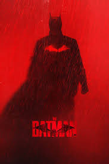
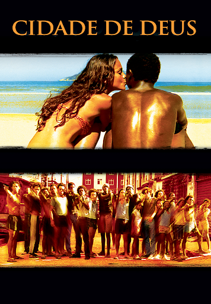
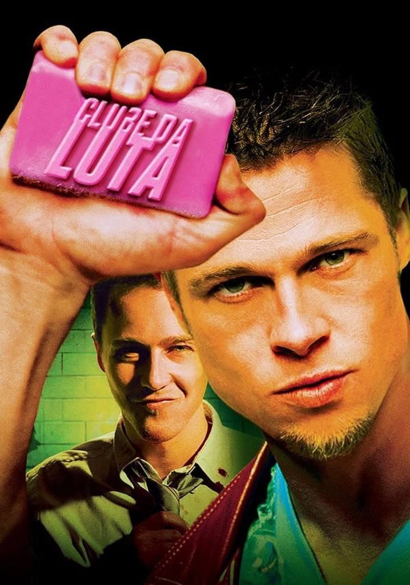
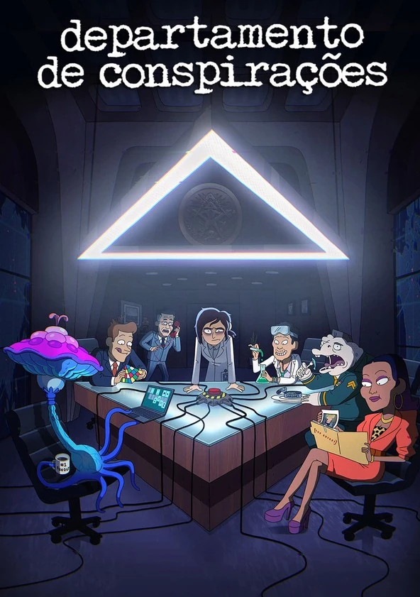

- THE BATMAN 
- CIDADE DE DEUS 
- CLUBE DA LUTA 
- THE GOOD, THE BAD AND THE UGLY

- DEPARTAMENTO DE CONSPIRAÇÕES 
O filme The Batman (2022) mostra Bruce Wayne investigando os assassinatos do vilão Charada, descobrindo a corrupção em Gotham e percebendo que precisa ser mais do que medo: ele deve se tornar esperança para a cidade.
*Cidade de Deus* (2002) mostra a vida na favela carioca, acompanhando Buscapé, que sonha em ser fotógrafo, e Zé Pequeno, que se torna um dos maiores criminosos locais, revelando a violência e a desigualdade da comunidade.
*Clube da Luta* (1999) acompanha um homem insatisfeito com a vida que cria, junto de Tyler Durden, um grupo secreto de lutas como forma de extravasar frustrações. Aos poucos, o clube cresce e vira um movimento anárquico, até ele descobrir que Tyler é, na verdade, uma projeção de sua própria mente.
*The Good, the Bad and the Ugly* (1966) acompanha três pistoleiros no Velho Oeste — o “Bom” (Blondie), o “Mau” (Angel Eyes) e o “Feio” (Tuco) — que, por interesses diferentes, entram em uma disputa cheia de alianças temporárias e traições em busca de um tesouro enterrado em um cemitério.
*Departamento de Conspirações* é uma animação da Netflix que acompanha Reagan Ridley e sua equipe na Cognito, Inc., uma organização secreta responsável por controlar e esconder teorias da conspiração, mostrando de forma cômica os bastidores absurdos do poder.